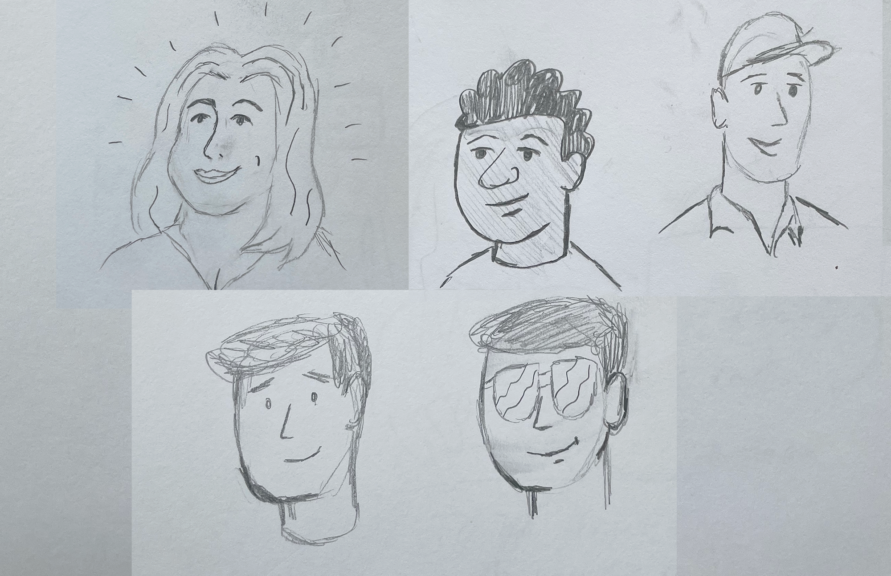
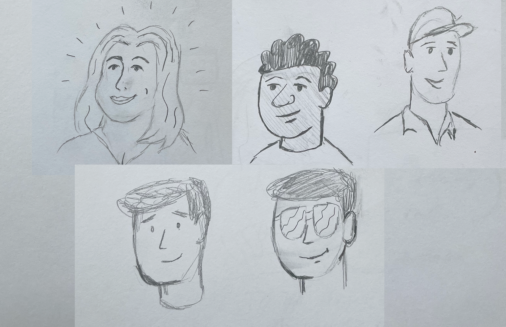
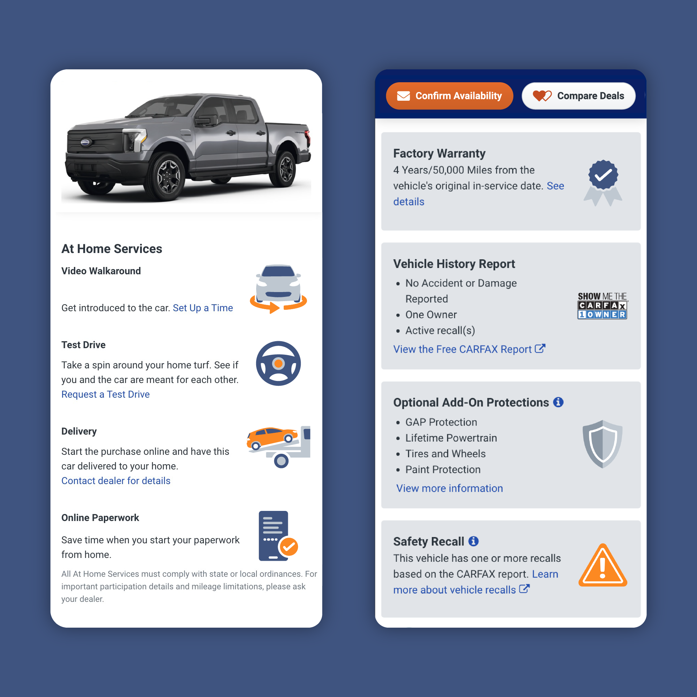

Autotrader Illustrations
Illustration style for Autotrader. Created to work throughout the entire product experience, from UI placements on the website and mobile app, to marketing and social applications.

These illustrations help to break up the images and text that make up a majority of the content on the site, and bring some fun, personality, and color to the brand. The style consists of three main elements: vehicles, people, and environments, as well as spot illustrations for placement within the UI where space is limited.

Vehicles
The vehicles needed a unique look and feel to everything else in the market. Utilizing a semi-realistic style that could help compliment the tone of the Autotrader brand and voice.


People
Establishing a character design style that was not overly trendy or cartoonish was tough to get right, but the inclusion of people helped to establish some humanity and relatability to the scenes.

 

Backgrounds
Background environments were created to help establish a setting for these vehicles and people to live in. Placing a vehicle in front of a dealership, city, or landscape helped to ground them further in reality.


Spot Illustrations
Spot illustrations are a simplified, more literal interpretation of a single concept. These images are smaller, and usually used for entry points or to represent one subsection within a larger group. They don't include people, or background imagery and there's less detail within objects.


Style Guide & Illustration Library
A style guide and illustration library for all of the various components within the library was created. This would provide information on best practices of how and when to use certain elements, instructions on creating new pieces, and establish rules of what to do and not do.
The illustration library was built in Figma so that designers across Autotrader teams could plug in and compose illustrations with the various elements where appropriate.